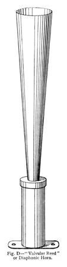
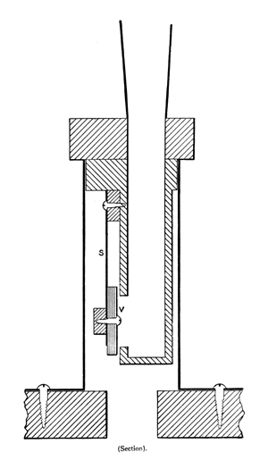

|
Diaphonic Horn English |
|
Wedgwood describes this stop as follows, with the accompanying illustrations:
In 1897 Mr. Hope-Jones patented an improved variety of Diaphone, known as the Diaphonic Horn, or sometimes as the �valvular reed�. In it the motor bellows is dispensed with, the vibrating pallet or disk being carried on the free end of a spring. It is thus a variety of beating reed. The construction of this form of Diaphone will be explained by reference to Fig. D. The spring is made of aluminium, a pliable metal readily admitting the correct adjustment of the disc in relation to the block against which it beats. Whereas the Tremulant Diaphones are tuned by the resonator or pipe, the valvular reed is properly tuned by the spring and regulated at the pipe.
|  |  |
Irwin lists this stop, but has nothing to add except that �its tone has considerably more overtone structure than the Diaphone�. Strony has this to say:
This was Wurlitzer's name for the 16' Horn Diapason in the larger instruments. The bottom 12 notes (the 16' octave) was made up of diaphone pipes, and the rest were the actual Horn Diapason flue pipes. There is a noticeable break where the Diaphones and Horn Diapason pipes meet. The Diaphonic Horn appears in the manual and pedal divisions at 16' pitch. In the manuals, this is a lighter and more transparent filler sound than the Open Diapason or Diaphonic Diapason. It is a neutral sound.
Diaphonic Horn 16', St. Clement, Ilford (England?).
Diaphonic Horn 16', Great, Pedal; John Ledwon Residence, Agoura, California, USA; Wurlitzer.
|
Original site compiled by Edward L. Stauff. For educational use only. DiaphonicHorn.html - Last updated 5 January 2002. |
Home Full Index |
{kind=link}
{kind=link}